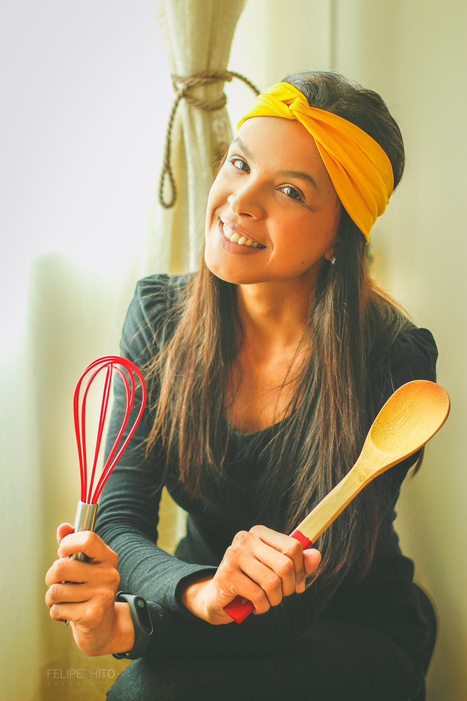

Sobre


Recomeços
Tudo começou com os docinhos gourmets da DNA Brigadeiro... Minha missão era criar conexão visual, mas sem perder a afetividade que só o doce caseiro pode proporcionar.
Chegamos em 2020 e finalmente a minha visão ganhou sua verdadeira forma e personalidade.
Mais que uma marca, a Ná Prates Confeitaria Artesanal representa tudo dessa mulher empreendedora que nasceu a partir dos bolos e doces. Carrega principalmente meus valores pessoais: honestidade, empatia e uma vontade incessante de fazer a diferença na vida do outro podem não ser degustativos, mas tornam a experiência única quando agregada a um sabor inesquecível.